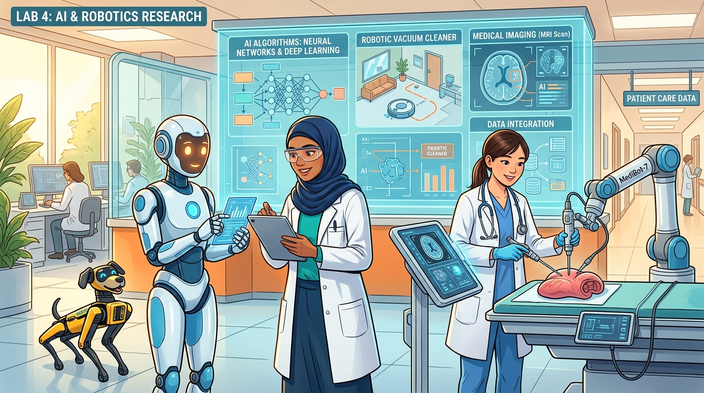

💡 أهمية تصريف الأفعال: التصريف الثالث (Past Participle - p.p.) هو العمود الفقري لبناء صيغة المبني للمجهول (Passive Voice) في زمن المستقبل البسيط (will be + p.p.). استمع لتصريف كل فعل وتدرب عليه جيداً 🔊.
💡 استوديو القراءة والقصة التفاعلية: استمتع بقراءة ومتابعة نصوص كتاب الطالب الرسمية في 4 مشاهد واقعية مصورة مع الترجمة الفورية والكلمات المفتاحية، مع إمكانية تشغيل القارئ الصوتي التلقائي (Auto Storyteller) 🔊.

Understanding the difference: Robots are machines that move, while AI is the thinking brain inside them.
🖼️ Scene 1 of 4Page 1 / 4
Scene 1: Robots and Artificial Intelligence
Many people think robots and Artificial Intelligence (AI) are the same, but they are different. A robot is a machine that can move and do tasks. Some robots are very simple, like a machine in a factory that puts bottles in a box. Other robots are more advanced, like robot dogs that can walk, run, and even play with people.
💡 الترجمة:
يعتقد كثير من الناس أن الروبوتات والذكاء الاصطناعي شيء واحد، لكنهما مختلفان تماماً. فالروبوت آلة قادرة على الحركة وأداء المهام؛ وبعضها بسيط للغاية مثل آلات المصانع التي تضع الزجاجات في الصناديق، بينما الروبوتات الأخرى متطورة مثل الكلاب الآلية.
Hey Adham, I read something interesting today. It said that AI can make art and music. Isn't that something only humans can do?
(مرحباً يا أدهم، قرأت شيئاً مثيراً للاهتمام اليوم؛ قيل إن الذكاء الاصطناعي يستطيع صنع الفن والموسيقى، أليس هذا عملاً يقتصر على البشر فقط؟)
👨🎓
Adham (أدهم)
Yeah, a lot of people think that. But with all the new innovation in technology, AI can actually create pictures, songs, and even stories!
(نعم، كثير من الناس يظنون ذلك، لكن مع الابتكارات الجديدة في التكنولوجيا، يستطيع الذكاء الاصطناعي صنع الصور وتأليف الأغاني بل وحتى القصص!)
👩🎓
Lina (لينا)
Really? How does that work?
(حقاً؟ وكيف يعمل ذلك؟)
👨🎓
Adham (أدهم)
Well, there are AI programs. For example, you type something like 'a cat flying in space', and it makes a picture! It uses a special algorithm to turn words into images.
(حسناً، هناك برامج ذكاء اصطناعي. مثلاً تكتبين عبارة مثل 'قط يطير في الفضاء'، فيقوم برسم صورة لها! إنه يستخدم خوارزمية خاصة لتحويل الكلمات إلى صور.)
👩🎓
Lina (لينا)
Wow! That sounds fun, Can it make music too?
(رائع! يبدو ذلك ممتعاً، هل يمكنه تأليف الموسيقى أيضاً؟)
👨🎓
Adham (أدهم)
Yes! Some AI can compose music or even write poems. Some writers use AI to get ideas or write the first draft of a story.
(نعم! بعض برامج الذكاء الاصطناعي تؤلف الموسيقى وتكتب قصائد شعرية، وبعض الكتاب يستعينون بها لتوليد الأفكار وصياغة المسودة الأولى للقصة.)
👩🎓
Lina (لينا)
But can AI really be creative? Doesn't it just copy things?
(ولكن هل يمكن للذكاء الاصطناعي أن يكون مبدعاً حقاً؟ ألا يقوم فقط بنسخ الأشياء؟)
👨🎓
Adham (أدهم)
Good question. AI learns by studying thousands of human-made songs, books, and art. Then it finds patterns and makes something new. It's like a virtual artist.
(سؤال وجيه. يتعلم الذكاء الاصطناعي من دراسة آلاف الأعمال الإنسانية من كتب وأغانٍ وفنون، ثم يكتشف الأنماط ويصنع شيئاً جديداً تماماً كفنان افتراضي.)
👩🎓
Lina (لينا)
Can AI feel emotions like a human artist?
(وهل يمكن للذكاء الاصطناعي أن يشعر بالعواطف كالفنان البشري؟)
👨🎓
Adham (أدهم)
No. AI is just a tool, not a replacement! But it's an exciting way to help humans be even more creative.
(كلا، فالذكاء الاصطناعي مجرد أداة مساعدة وليس بديلاً عن الإنسان، ولكنه وسيلة رائعة تمكن البشر من مضاعفة إبداعهم.)
(هل تعتقد أن الروبوت يمكنه أداء كافة أعمال البشر؟)
A: No, I do not think so. They need humans to program them.
(لا، لا أعتقد ذلك لأنها تحتاج دائماً للبشر لبرمجتها.)
Speaking Q&A
Q: How can robots help in hospitals?
(كيف تساعد الروبوتات في المستشفيات؟)
A: They can bring medicine to patients and help during surgery.
(يمكنها نقل الدواء للمرضى وتقديم المساعدة في العمليات الجراحية.)
Speaking Q&A
Q: Do you think robots and AI can make our life better? Why?
(هل تعتقد أن الروبوتات والذكاء الاصطناعي يجعلان حياتنا أفضل؟ ولماذا؟)
A: Yes, because they offer incredible benefits across many fields.
(نعم، لأنها تقدم فوائد ومزايا هائلة في مجالات متعددة.)
Speaking Q&A
Q: What do you know about Artificial Intelligence (AI)?
(ماذا تعرف عن الذكاء الاصطناعي؟)
A: It is technology that helps computers and machines do tasks.
(هو تكنولوجيا متقدمة تمكن الحواسيب والآلات من أداء المهام بذكاء.)
Speaking Q&A
Q: What fields does AI help in?
(ما هي المجالات التي يفيد فيها الذكاء الاصطناعي؟)
A: It helps in many fields, like medicine, education, and transportation.
(يفيد في قطاعات واسعة كالطب والتعليم ووسائل النقل.)
Speaking Q&A
Q: How do you think AI helps in education?
(كيف يسهم الذكاء الاصطناعي في التعليم برأيك؟)
A: It helps students learn new languages and solve math problems.
(يساعد الطلاب على إتقان لغات جديدة وحل المسائل الحسابية المعقدة.)
Speaking Q&A
Q: Do you think AI will become smarter than humans one day?
(هل تظن أن الذكاء الاصطناعي سيصبح أذكى من البشر يوماً ما؟)
A: No, I think humans will always be more creative.
(كلا، أعتقد أن البشر سيظلون دائماً أكثر إبداعاً ووجداناً.)
⚡ قواعد الوحدة: زمن المستقبل البسيط مبني للمعلوم والمجهول (Future Simple: Active & Passive)
💡 مفهوم المبني للمجهول في المستقبل (Future Simple Passive): يُستخدم لوصف أحداث سوف تقع في المستقبل مع التركيز على الحدث نفسه أو الشيء المتأثر (المفعول به) بدلاً من الفاعل (will be + p.p.).
Basic Principle of Passive Voice
القاعدة الذهبية لتحويل المستقبل للمجهول
Rule: In Future Simple Passive, we start with the Object, followed by will be / won't be, and the Past Participle (p.p.) of the main verb: